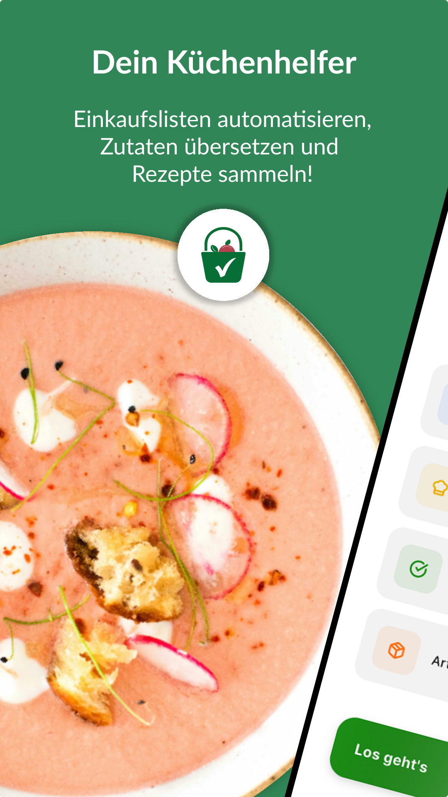
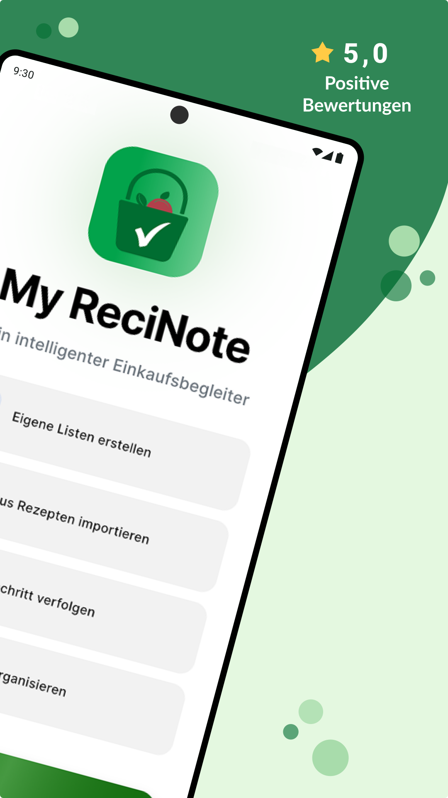
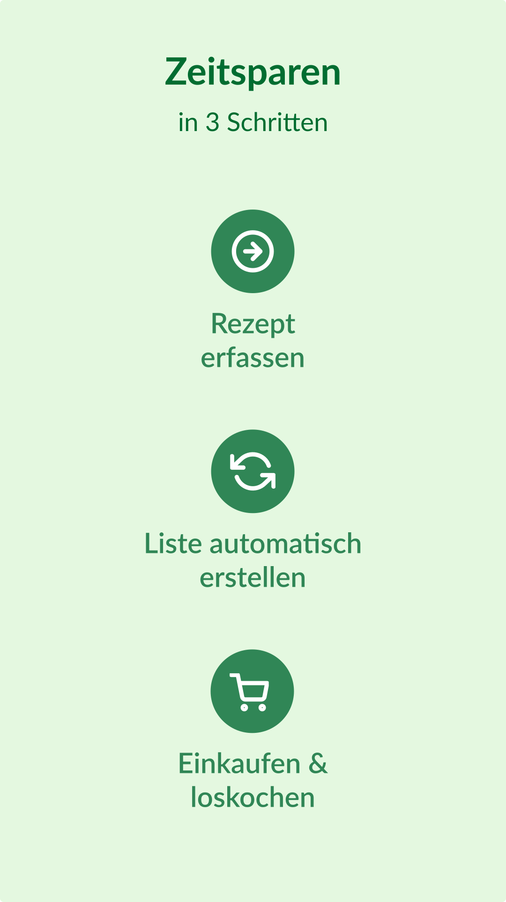
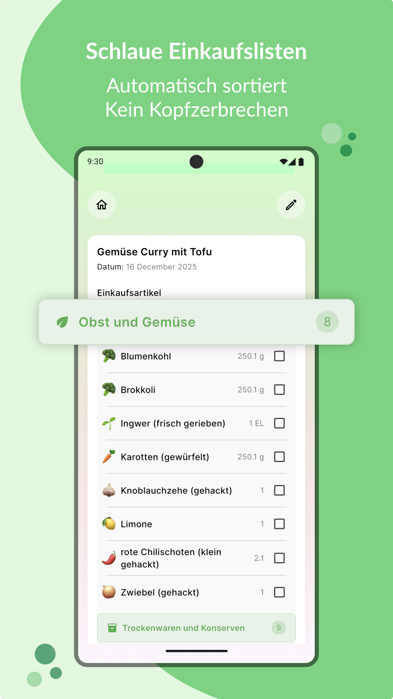
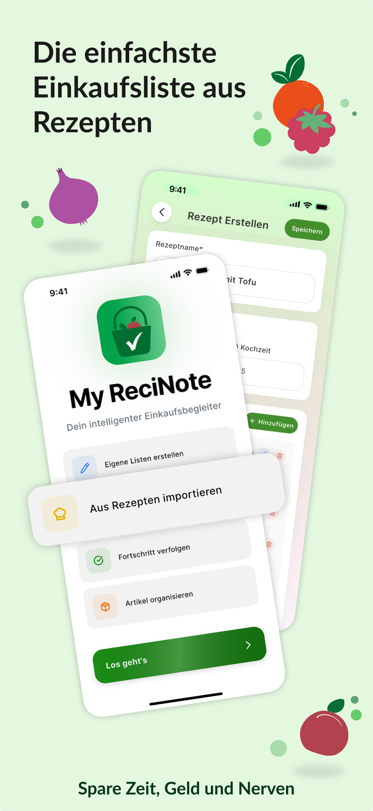
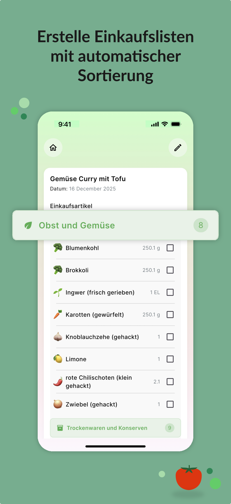

I'm a multidisciplinary designer based in Bavaria. At Deutsche Börse, I lead end-to-end design for digital products, and outside the office I illustrate, paint and build in 3D.
I'm a multidisciplinary designer based in Bavaria, working across UX/UI and interaction design, motion graphics, 3D and illustration. I love turning complex ideas into clear, compelling experiences.
At Deutsche Börse, I lead end-to-end design for digital products, from user research and prototyping to design systems and multimedia. I work closely with product teams and developers.
Beyond the screen
Away from product work, I create 2D and 3D art: hand-painted game icons, pixel art, character design, figure drawing, 3D environments and surreal acrylic paintings.
TODO: Datenschutzerklärung (Hosting, Google Fonts, Links zu YouTube und Vimeo).
Role
Lead UX/UI Designer
Scope
Research · Information architecture · UI · Design system · Handoff · Post-launch testing
Team
Product management, internal stakeholders (SMEs) and development
Tools
Figma
The challenge
Business clients use the portal for their key services, but some of them sat up to seven levels deep in nested tiles, with a full page reload at every step. Client feedback kept naming the same problems: hard to scan, easy to get lost, unclear information.
Goal: every key service within two clicks, with a structure that still works when new services are added.
Process
DiscoverInterviews, feedback, benchmark
DefineCard sorting, information architecture
IdeateNavigation concepts, sketches
DesignWireframes, UI, prototype
DeliverComponent library, handoff, testing
01 DiscoverUnderstanding how clients work
I interviewed clients and analysed their feedback to map real workflows and where they got stuck. A benchmark of other B2B portals showed which navigation patterns scale to a large number of services.
02 DefineCard sorting for the information architecture
Together with the client-facing team, who know the clients' questions first hand, I ran a card sorting. Participants grouped the portal's content in a way that made sense to them; where most of them agreed, a group became a branch of the navigation. Outliers were reviewed in follow-up conversations.
Placeholder: the real services are confidential, so the labels shown here are representative.
03 IdeateSix navigation concepts
Based on the new structure I explored six navigation directions as wireframes and compared them by path length, scannability and how well they scale.
Top mega menu. All levels in cascading columns: fast for experts, overwhelming for everyone else.Side flyout. The same depth, just moved to the side.Cards. Clear overview, but one extra page per level.Hub & spoke. A clear starting point, but every task begins on the home page.Command palette. Fast for users who know what they need, no orientation for everyone else.Chosen: sections. Two-level side menu, the third level as tabs, compact service tiles.
Interaction sketch
One flow from the dashboard to a service.
Collapsed menuIcons only, so the dashboard and its widgets get the full width.
Menu opensSubheadlines group the services; every first-level entry is one click away.
Second level expands in placeNo page reload; the path stays visible and highlighted.
Third level as tabsThe service page shows its sections as a tab bar; tiles lead straight into the app.
Profile menuLanguage, personal data and logout, top right.
04 DesignFrom wireframe to interface
Low-fidelity wireframes fixed the layout of every page type before any visual design. I validated them in a clickable prototype and then built the high-fidelity interface on top.
Dashboard: menu, widget area and a support rail on the right.Service page: second level in the menu, third level as tabs, tiles grouped by section.Support panel (favorites) opens beside the content instead of covering it.Support panel (help): context for the current page.
The solution
A dashboard per user. Messages, tasks, tickets and favorites on one page, customizable widget by widget.
Two levels and a tab bar. Services expand in place in the side menu; deeper content sits in tabs instead of new pages.
Support in context. Help, tickets and favorites open in a side panel without leaving the current task.
Home: the personal dashboard.Collapsed menu: the content gets the full width.Tasks: one list, filtered by status.Selected task: details open next to the list, no page reload.Service overview: second level in the menu, third level as tabs.A tab jumps straight to its group of services.Support panel: help for the current page.Support panel: open a ticket without leaving the page.Support panel: save the service as a favorite.
Responsive design
On mobile, the side menu moves behind a burger icon and the tab bar collapses into a dropdown, so the same two levels and tabs work on a small screen. I took the mobile layout from low-fidelity wireframes to the high-fidelity interface.
Low fidelity (left) to high fidelity (right): page, tab dropdown and menu.
05 DeliverA component library for every new service
I built a Figma UI component library for the portal: navigation, tab bar, tiles, widgets and support panel, each with documented variants and states. With it, the team can mock up a new service design in a short time instead of starting from scratch, and development gets consistent building blocks.
Development received the interactive prototype with specifications. After implementation I tested the navigation again in the live product.
Impact
Key services moved from up to 7 levels to 2.
New services are designed from the component library instead of from scratch.
Product management · Internal stakeholders · Development
Tools
Figma
The challenge
Every client enters the portal through the same three screens: the landing page, the login and the registration. All three looked outdated. For a leading financial institution, that undermines trust before anyone has logged in.
The login also had no two-factor authentication, so accounts were missing an essential layer of security. Registration was one long, inconsistent form, which created friction and likely drop-offs.
Goal: a modern, secure entry point that gets clients from the landing page into the portal without friction, with 2FA built in.
Process
DiscoverContent audit, support logs, stakeholder feedback
BenchmarkFinancial institutions, FinTech and B2B portals
DefineUser flow mapping, information architecture
DesignWireframes, UI, interactive prototype
DeliverComponent library, specifications, handoff
01 DiscoverWhat clients need before logging in
I analysed support logs and stakeholder feedback to find what clients actually look for on the landing page. That narrowed the content down to a short list of must-haves and kept the page focused. For login and registration I mapped the existing flows step by step to find each friction point and every step that wasn't needed.
02 BenchmarkThe visual language of trust
I reviewed leading financial institutions, FinTech portals and B2B platforms. The benchmark showed which patterns are standard for secure login and onboarding, and where the portal could stand out.
03 DefineStructure before visuals
Low-fidelity wireframes set the information architecture. On the landing page, login and registration actions sit where the eye lands first. For registration I proposed a new flow that splits one long form into short, logical steps.
04 DesignFrom wireframe to interface
I built the high-fidelity interface on the existing Deutsche Börse brand identity, with generous white space, high contrast and legible type for every client group. An interactive prototype covered the whole journey from landing page to login. I used it to test the support tiles and the transitions and to collect stakeholder feedback before development started.
The solution
Landing page
Clean headerFewer navigation items and one clear call to action: existing clients log in, new clients register.
Service overviewModular cards with custom icons and short headers replace dense paragraphs.
Covered entitiesA grid of logos and tags shows which entity types the portal supports, so clients can see it handles complex, multi-entity structures.
Support tilesTriage for access problems, so no one gets stuck outside.
Login & registration
One input component. Every field in every flow follows the same design and interaction rules.
Secure login with 2FA. A focused login screen where the extra security step feels like part of the flow, not a technical hurdle.
Registration in steps. One long form became four short steps: Enter credentials → Verify code → Set password → Log in.
Password recovery. The same guided steps as registration, so users only need to learn one pattern.
Login: one focused form.2FA: the code step is part of the flow, not a detour.Registration step 1: company email.Inline error right at the field.Step 2: verify the code sent by email.Wrong code: clear message, request a new one.Step 3: the password rules are visible up front.Rules tick off while typing.All rules met: continue unlocks.Done: one click to log in.
05 DeliverBuilt as designed
Development received a full handoff package: a documented component library, specifications for spacing and typography, every interaction state, and optimised SVG assets.
Impact
Two-factor authentication added to the login.
Registration in four guided steps instead of one long form, expected to raise completion rates and reduce errors.
One consistent entry point across landing page, login, registration and recovery, all in line with the Deutsche Börse brand.
Role
Lead UX/UI Designer
Users
External Clearing Members · internal Onboarding and Key Account Managers
The tool handles onboarding and segregation changes for external members and internal teams. Its dated, low-contrast interface made dense information hard to read, and important workflows were hidden in complex menus.
My role
I led the end-to-end redesign together with product managers and developers, balancing user needs with technical constraints.
Process
Map. I documented features, structure and user workflows as the basis for the redesign.
Explore. Low-fidelity wireframes tested dashboard, menu and component behaviour before any visual design.
Systematise. I defined a UI strategy built on clear hierarchy, sufficient contrast and reusable components.
The redesign
A calm background, a considered colour palette and consistent components give structure to the dashboard, tables, cards, navigation, pop-ups and notifications. A Figma library with hover, active and disabled states became the shared reference for design and development.
Dashboard: the full page.
Table overview: dense data, easy to scan with sortable columns and status tags.New request: a short modal over the table, so users keep their context.Assign a capacity: one list, one action per row, the breadcrumb shows the step.Form setup: review the capacity, set clearing only, confirm.
Handoff and expected impact
I prepared detailed specifications and supported developers throughout implementation.
Key information is faster to scan
More consistent workflows for internal and external users
Client and project are confidential and not public, so names and details are kept general here.
Clients of a financial services provider could find the right documents in its support section, but they still had to read them to get their answer. Users now expect conversational interfaces and instant results, not lists of links.
My role
As product owner, I defined the vision and led the design, aligning AI specialists on capabilities and developers on feasibility.
Process
Set the vision. A deliberately reduced, search-centric product with the search bar as the hero.
Design the conversation. Flows for search and chatbot, including fallbacks for when the AI has no clear answer. This is a key trust decision.
Prototype end to end. Interactive hi-fi prototypes covering the question, the AI-summarised answer and the drill-down to the source document, so every answer stays traceable.
The solution
Landing page
Search firstOne prominent search bar in the hero. Users ask their question instead of browsing a menu.
Topic tilesSeven entry points such as releases, calendars and circulars as a second path for users who prefer to browse.
Most relevant topicsThe most-clicked topics per category give a starting point to users who don't know the right keyword.
AI chatbotAlways one click away. It guides users through complex questions and links every answer to its source document.
Latest publicationsA compact teaser carousel surfaces news without crowding the page.
Chatbot flow
Expected impact
Answers in seconds instead of document reading
24/7 support that relieves the human support team
A platform that improves as the knowledge base grows
Client
ReciNote mobile app (freelance)
Year
2025
Role
Illustrator · Motion & Graphic Designer
Deliverables
Illustration system · UI overlays · Lottie loading animation · 10 store slides

Brief
The app's graphics came in mixed styles and didn't match the brand, and its store pages used generic stock-style visuals. ReciNote needed one consistent visual identity across the app and its storefronts.
Approach
I started with the system rather than single images: a shared style for line, colour and shape, documented as a reusable library. Every later asset (animation, overlays and store slides) builds on it.
01 · In-app illustrations
Before and after: the same screens with the old mixed graphics and with the new illustration system.
Before: shopping lists with mixed, off-brand graphics.After: one illustration style that matches the brand.Before: recipes.After: recipes.
A Lottie animation for app launch: a playful first impression that stays lightweight and doesn't slow the app down.
03 · Play Store & App Store slides
Story-driven slides: each one pairs a headline, a single benefit and a clean UI mockup.
Play Store slides (Android)




App Store slides (iOS)


Result
A coherent, recognisable brand inside and outside the app, plus an illustration library the team can keep extending.
Role
Marketing Advisor & Designer (freelance)
Period
April 2023 – July 2024
Formats
Postcards · Leporello · Flyers · Magazine ads · Window posters · Social media
Tools
Adobe Photoshop · Adobe InDesign · Adobe Premiere Pro
Brief
The theatre needed a steady stream of on-brand material to promote events across all its venues, in print and on social media.
Approach
I designed recurring formats rather than one-off pieces, so every month and every event could be produced quickly within the theatre's brand. I also helped refine the design language and content strategy.
Work
Monitor displays
Event graphics for the monitors in the theatre foyers and box office.
Postcards
One postcard per production, front and back, distributed in cafés and bars across the city.
As One, frontBackDer Prinz von Schiras, frontBackDon Quijote, frontBackPeter Pan, frontBackTransit, frontBack20.000 Meilen unter dem Meer, frontBackHello Stranger, frontBackRomulus der Große, frontBack
Monthly leporello
The full programme across all venues in one folded brochure, with a calendar on the back.
December: programme sideCalendar sideJanuary: programme sideCalendar sideFebruary: programme sideCalendar side
Concert flyer
Inside: three concerts with programme and ticketsOutside
Magazine ads
Monthly premiere ads in the local culture magazine Wohin.
AprilMayJune
Window posters
Monthly posters for the box office windows at Bismarckplatz.
April, panel 1Panel 2May, panel 1Panel 2June, panel 1Panel 2
Social media
Weekly social format: a recurring post series for Instagram and Facebook.Weekly social format.Weekly social format.
Result
A reliable, recognisable visual presence that supported the theatre's campaigns and strengthened its brand identity.
Role
Press Officer & Graphic Designer (fixed-term)
Editions
69th and 70th Berlin International Film Festival (2019, 2020)
Format
130-page editorial dossier
Tools
Adobe InDesign · Adobe Photoshop · Meltwater

Brief
After each festival, the Berlinale needed to show its main sponsors how far the festival's media reach extended.
Approach
I combined analysis and design: tracking daily press coverage during the festival, then editing the most relevant articles and visuals into a clear editorial structure.
Work
International press quotes set as large typographic pages, paired with festival photos and magazine coverage.
70th Berlinale (2020)
69th Berlinale (2019)
Result
A representative retrospective that made the festival's media impact visible to its sponsors, produced for two festival editions.
Eurex Communication Services Explainer. A scripted explainer video for Eurex's information channels. After Effects · Premiere Pro